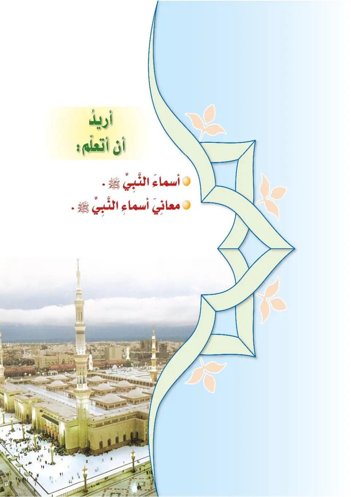
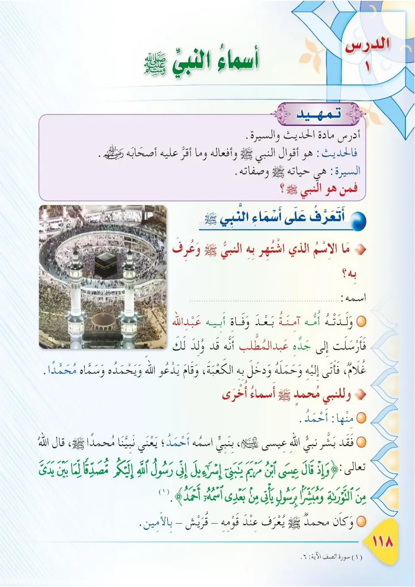
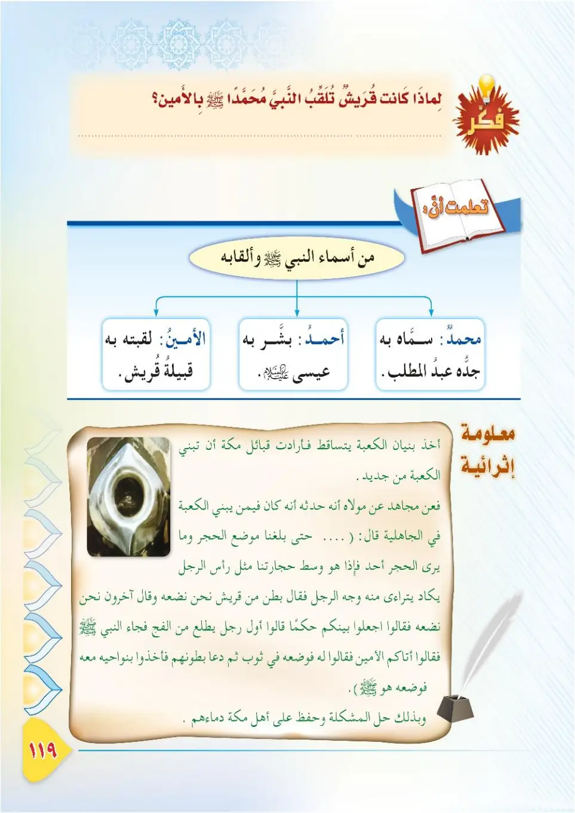
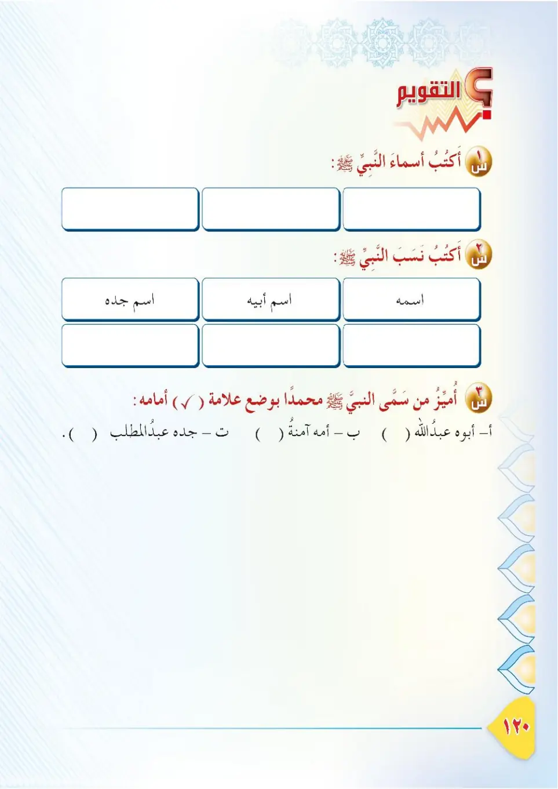

Stage 3·المرحلة الثالثة📖 Unit 1
أَسْمَاءُ النَّبِيِّ ﷺ The Names of the Prophet ﷺ
From the Textbookpp. 118–121




أحببتُ رسولَ اللهِ محمدًا ﷺ، وتعلَّمتُ في مادةِ الحديثِ أنَّ الحديثَ: ما يُروى عن النبي ﷺ من أقوالٍ وأفعالٍ. والسيرةُ: هي حياةُ النبي ﷺ. مَن سمَّى النبيَّ محمدًا ﷺ بهذا الاسمِ؟ ومَن أطلق عليه أسماءَه الأخرى؟
Ahbabtu rasula Allahi Muhammadan ﷺ, wa ta'allamtu fi maddati al-hadith anna al-haditha ma yurwa 'ani an-nabiyyi ﷺ min aqwal wa af'al. Was-seeratu hiya hayatu an-nabiyyi ﷺ. Man samma an-nabiyya Muhammadan ﷺ bihadha al-ismi? Wa man atlaqa 'alayhi asma'ahu al-ukhra?
I love the Messenger of Allah, Muhammad ﷺ, and in the Hadith subject I learned that the hadith is what is narrated about the Prophet's statements and actions, and that the Seerah is the life of the Prophet ﷺ. Who named the Prophet Muhammad ﷺ with this name? And who gave him his other names?
அல்லாஹ்வின் தூதர் முஹம்மது ﷺ அவர்களை நான் நேசிக்கிறேன். ஹதீஸ் பாடத்தில் கற்றுக்கொண்டேன்: ஹதீஸ் என்பது நபி ﷺ அவர்களின் சொற்கள், செயல்கள் பற்றி அறிவிக்கப்படுவது. சீரா என்பது நபி ﷺ அவர்களின் வாழ்க்கை வரலாறு. முஹம்மது ﷺ என்ற பெயரை யார் சூட்டினார்கள்? அவர்களின் நல்ல பெயர்களை யார் இட்டனர்?
لَمَّا وُلِدَ النبيُّ ﷺ وقد توفِّيَ أبوه عبدُ اللهِ، أرسلَتْ به أمُّه آمنةُ إلى جدِّه عبدِ المطَّلبِ؛ لأنَّه قد وُلِد له غلامٌ. فأتى به ودخل به الكعبةَ، وقام يدعو اللهَ، وحملَه إليه، فرحَّبَ به وسمَّاه محمدًا.
Lamma wulida an-nabiyyu ﷺ wa qad tufiffiya abuhu 'Abdullah, arsalat bihi ummuhu Aaminatu ila jaddihi 'Abdil-Muttalib; li'annahu qad wulida lahu ghulam. Fa'ata bihi wa dakhala bihi al-ka'bata, wa qama yad'u Allaha, wa hamalahu ilayhi, farahhaba bihi wa sammahu Muhammadan.
When the Prophet ﷺ was born, after his father Abdullah had passed away, his mother Aaminah sent him to his grandfather 'Abdul-Muttalib, because a grandson had been born to him. He brought him, entered the Kaaba with him, stood supplicating to Allah, carried him close, welcomed him, and named him Muhammad.
நபி ﷺ அவர்கள் பிறந்தபோது அவர்களின் தந்தை அப்துல்லாஹ் இறந்துவிட்டார். தாய் ஆமினா அவர்களைத் தாத்தா அப்துல் முத்தலிபிடம் அனுப்பினார் — ஏனெனில் அவருக்குப் பேரன் பிறந்திருந்தான். அவர் அவரை அழைத்துவந்து கஅபாவில் நுழைந்து அல்லாஹ்விடம் பிரார்த்தித்து, அவரை ஏந்தி வரவேற்று, 'முஹம்மது' என்று பெயரிட்டார்.
وللنبي ﷺ أسماءٌ أخرى، منها: أَحْمَدُ. فقد بشَّر نبيُّ اللهِ عيسى بنُ مريمَ عليه السلامُ بنبيٍّ اسمُه أحمدُ، يعني نبيَّنا محمدًا ﷺ. قال تعالى:
Walinnabiyyi ﷺ asma'un ukhra, minha: Ahmad. Faqad bashshara nabiyyu Allahi 'Isa ibnu Maryama 'alayhis-salam bi-nabiyyin ismuhu Ahmad, ya'ni nabiyyana Muhammadan ﷺ. Qala ta'ala:
The Prophet ﷺ has other names, among them: Ahmad. The Prophet of Allah, 'Eesa son of Maryam, peace be upon him, gave glad tidings of a prophet named Ahmad — meaning our Prophet Muhammad ﷺ. Allah the Exalted said:
நபி ﷺ அவர்களுக்கு வேறு பெயர்களும் உண்டு. அவற்றில் ஒன்று 'அஹ்மத்', அல்லாஹ்வின் நபி ஈசா இப்னு மர்யம் (அலை) அவர்கள் 'அஹ்மத்' என்ற பெயருடைய ஒரு நபி வருவார் என்று நல்லறிவிப்புச் செய்தார் — அதாவது நம் நபி முஹம்மது ﷺ. அல்லாஹ் கூறினான்:
﴿وَإِذْ قَالَ عِيسَى ابْنُ مَرْيَمَ يَا بَنِي إِسْرَائِيلَ إِنِّي رَسُولُ اللَّهِ إِلَيْكُم مُّصَدِّقًا لِّمَا بَيْنَ يَدَيَّ مِنَ التَّوْرَاةِ وَمُبَشِّرًا بِرَسُولٍ يَأْتِي مِن بَعْدِي اسْمُهُ أَحْمَدُ ۖ فَلَمَّا جَاءَهُم بِالْبَيِّنَاتِ قَالُوا هَٰذَا سِحْرٌ مُّبِينٌ﴾
Wa-idh qala 'eesa ibnu maryama ya bani isra'ila inni rasulullahi ilaykum musaddiqan lima bayna yadayya mina at-tawrati wa mubashshiran bi-rasulin ya'ti min ba'di ismuhu ahmad. Falamma ja'ahum bil-bayyinati qalu hadha sihrun mubin.
And [mention] when 'Eesa, the son of Maryam, said, "O Children of Israel, indeed I am the messenger of Allah to you, confirming what came before me of the Torah and bringing good tidings of a messenger to come after me, whose name is Ahmad." But when he came to them with clear evidences, they said, "This is obvious magic."
'ஈசா இப்னு மர்யம் கூறியதை நினைவுகூருங்கள்: “இஸ்ராயீல் சந்ததியினரே! தவ்ராத்தில் எனக்கு முன் இருப்பதை உண்மைப்படுத்துபவனாகவும், எனக்குப் பின் வரும், பெயர் அஹ்மத் என்று இருந்த தூதரை நல்லறிவிப்புச் செய்பவனாகவும் நான் உங்களிடம் அனுப்பப்பட்ட அல்லாஹ்வின் தூதன் ஆவேன்.” ஆனால் அவன் அவர்களிடம் தெளிவான அத்தாட்சிகளுடன் வந்தபோது, “இது தெளிவான சூனியம்” என்று கூறினர்.
وكان محمدٌ ﷺ يُعرَفُ عند قومِه قريشٍ بالأمينِ؛ لما عُرِف به من صدقٍ وأمانةٍ وحفظٍ للودائعِ.
Wa kana Muhammadun ﷺ yu'rafu 'inda qawmihi Qurayshin bil-Ameen; lima 'urifa bihi min sidqin wa amanatin wa hifzin lil-wada'i.
Muhammad ﷺ was known among his people, the Quraysh, as Al-Ameen (the Trustworthy) because of his known truthfulness, honesty, and preservation of deposits.
முஹம்மது ﷺ அவர்கள் தம் குலமான குறைஷியரிடையே, அவர்களின் உண்மைத்தன்மை, நம்பிக்கைக்குரியவர் என்பதன் காரணமாக 'அல்-அமீன்' (நம்பிக்கைக்குரியவர்) என்று அறியப்பட்டார்கள்.
أَنْشِطُ نَفْسِي — أنسبُ بين العمودَينِ: ١- سَمَّاهُ محمدًا: جَدُّهُ عبدُ المطَّلبِ. ٢- بشَّرَ به: عيسى بنُ مريمَ عليه السلامُ. ٣- لقَّبَتْه بالأمينِ: قريشٌ إكرامًا له.
Anshitu nafsi — ansib bayna al-'amudayn: 1. Sammahu Muhammadan: jadduhu 'Abdul-Muttalib. 2. Bashshara bihi: 'Isa ibnu Maryama 'alayhis-salam. 3. Laqqabathu bil-Ameen: Qurayshun ikraman lahu.
Activity — match between the two columns:
1. Named him Muhammad: his grandfather 'Abdul-Muttalib.
2. Gave glad tidings of him: 'Eesa son of Maryam, peace be upon him.
3. Nicknamed him Al-Ameen: the Quraysh, honouring him.
செயல்பாடு — இரு பகுதிகளையும் பொருத்துக:
1. 'முஹம்மது' என்று பெயரிட்டவர்: தாத்தா அப்துல் முத்தலிப்.
2. அவர் வருவார் என்று நல்லறிவிப்புச் செய்தவர்: ஈசா இப்னு மர்யம் (அலை).
3. 'அல்-அமீன்' என்று பட்டம் சூட்டியவர்: அவரைக் கௌரவித்த குறைஷியர்.
معلومةٌ إثرائيَّةٌ — قِصَّةُ وَضْعِ الحَجَرِ الأسودِ: لَمَّا أرادت قبائلُ قريشٍ بناءَ الكعبةِ من جديدٍ، اختلفوا فيمَن يضَعُ الحجرَ الأسودَ، فقالوا: اجعلوا حكمًا بيننا أوَّلَ من يطلُعُ من هذا الفجِّ. فجاء النبيُّ ﷺ، فقالوا: أتاكم الأمينُ. فأخذ ثوبًا ووضَعَ الحجرَ فيه، ودعا بطونَ قريشٍ فأخذوا بنواحي الثوبِ، ثمَّ أخذه النبيُّ ﷺ فوضَعَه في مكانِه، وبذلك حُلَّتِ المشكلةُ وحُفِظتْ دماءُ أهلِ مكةَ.
Ma'lumatun ithra'iyyah — qissatu wad'i al-hajari al-aswad: lamma aradat qaba'ilu Qurayshin bina'a al-ka'bati min jadid, ikhtalafu fiman yada'u al-hajara al-aswad, faqalu: ij'alu halaman baynana awwala man yatl'u min hadha al-fajj. Faja'a an-nabiyyu ﷺ, faqalu: atakum al-Ameen. Faakhadha thawban wa wada'a al-hajara fihi, wa da'a butuna Qurayshin faakhadhu binawahi ath-thawb, thumma akhadhahu an-nabiyyu ﷺ fawada'ahu fi makanih, wabidhalika hhullat al-mushkilatu wa hufidhat dima'u ahli Makkah.
Enrichment — the story of placing the Black Stone: When the tribes of Quraysh wanted to rebuild the Kaaba, they disagreed over who would place the Black Stone, and they said: "Let the first to come through this mountain pass judge between us." The Prophet ﷺ came and they said: "Al-Ameen has come to you." He took a cloth, placed the stone in it, and called the clans of Quraysh to hold its edges; then the Prophet ﷺ took the stone and placed it in its position, thereby solving the problem and preserving the lives of the people of Makkah.
செறிவூட்டல் — கருங்கல் வைக்கப்பட்ட கதை: குறைஷி குலங்கள் கஅபாவை மீண்டும் கட்ட முனைந்தபோது, கருங்கல்லை யார் வைப்பது என மாறுபட்டனர். "இந்தப் பள்ளத்தாக்கின் வழியாக முதலில் வருபவரை நடுவராகக் கொள்வோம்" என்றனர். நபி ﷺ வந்தபோது, "அல்-அமீன் வந்துவிட்டார்" என்றனர். அவர் ஒரு துணியை எடுத்து அதில் கல்லை வைத்து, குறைஷி குலங்களை அழைத்து துணியின் பக்கங்களைப் பிடிக்கச் சொன்னார். பிறகு நபி ﷺ கல்லை எடுத்து அதன் இடத்தில் வைத்தார். இவ்வாறு பிரச்சினை தீர்ந்தது; மக்களின் உயிர்கள் காக்கப்பட்டன.